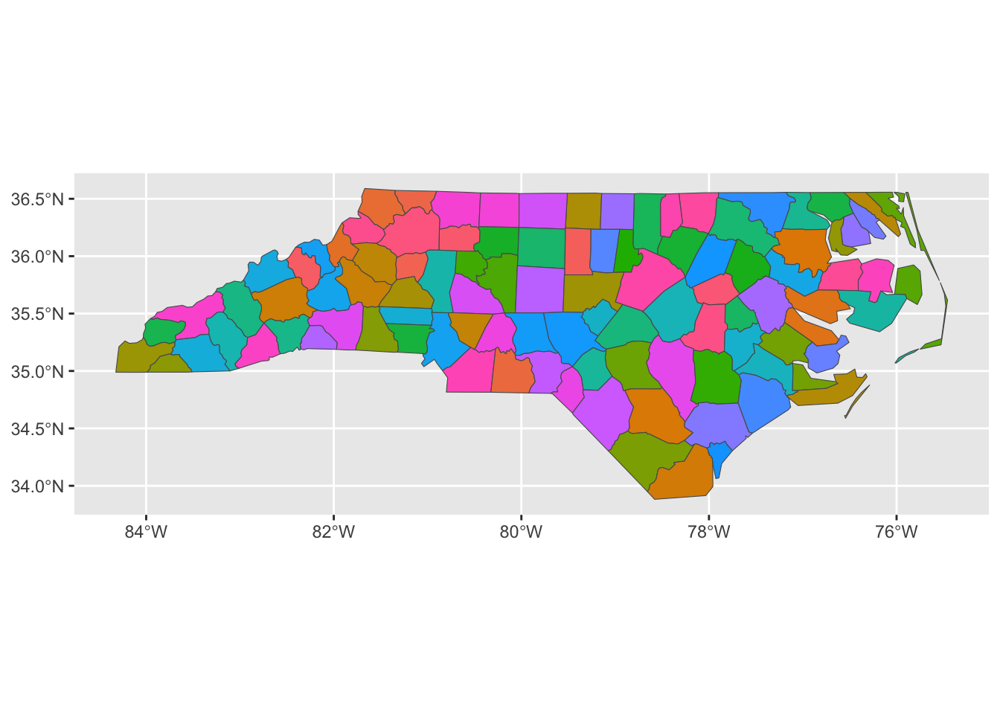

STA 9750 Week 8 Pre Assignment: Taking Plots to the Next Level
Due Date: 2025-10-27 (Monday) at 11:59pm
Submission: CUNY Brightspace
This week, we will dive deeper into the world of data visualization, with a focus on tools for interactive (and animated) data visualization. Before doing so, let’s pause and consolidate everything we’ve done to date:
If you did not finish last week’s in-class lab, do so now.
-
Explore the R Graphics Gallery “Best Charts” collection. Pick one chart from this collection and evaluate it with a critical eye:
- Is it well styled?
- What story is it trying to tell?
- Does it tell that story effectively?
- Do you believe that story?
- How could it tell the story more effectively?
After doing that, we’re ready to move on to new material. This week, we will explore various technologies for interactive data visualization. These can be divided into two broad categories:
- Server Based: When the user makes a change to a plot, it is sent to a server where the new plot is rendered and returned to the user.
- Browser Based: When the user makes a change to a plot, the new plot is created in the browser and re-rendered ‘on site’. (This is the strategy I have used through some of these notes, where you are able to type
Rcode and run it directly in your browser.)
Generally, server-based approaches are more flexible and a bit easier to implement, while browser-based approaches are more responsive and scalable. Since the browser work is done locally on the user’s computer (or phone or tablet), they are also cheaper and safer to run as there’s no need to have a server constantly responding to user input.
This week, we will explore a bit of each modality, though entire courses (and indeed entire careers) have been spent on both.
In the R ecosystem, the tool of choice for building server-based1 web applications is shiny.2 For this pre-assignment, you will work through Lessons 1 and 2 of the “Shiny Basics” web tutorial. (You do not need to do the “Next Steps” in Lesson 3, but you are of course welcome to.)
After finishing these activities, complete the Weekly Pre-Assignment Quiz on Brightspace.
Optional Enrichment: Myth Busting and Apophenia in Data Visualization”
Watch Prof. Di Cook’s lecture “Myth busting and apophenia in data visualisation: is what you see really there?”. As we discussed in class, plots are an excellent way to explore data, but we always want to be careful that what we think find truly exists. Prof. Cook discusses relationships between effective statistical visualization and effective statistical practice.
Optional: Check Software Install
This upcoming week, we will use several new R packages. These packages depend on additional software external to R; while this is not typically an issue, and R attempts to install these additional libraries “auto-magically” for you, issues do occasionally arise. In preparation for class, I recommend that you attempt to install these additional libraries so that you will be able to easily follow along in class.
In particular, there are three R packages you should install and confirm work as expected:
-
shiny- A library for interactive dashboard creation -
sf- A library for working with geospatial data -
gganimate- A library for producing animated graphics.
I provide code to install and run a small example of each software below. If you can run all of these without issue, you should be good to go. (You do not need to understand this code just yet, but you are welcome to work through it.) If you have issues installing this software, please reach out for help on the course discussion board or in office hours.
shiny
The following script will install shiny:
Once shiny is installed, confirm that it works as desired by running the following code:
shinyApp(
ui = fluidPage(
numericInput("n", "n", 1),
plotOutput("plot")
),
server = function(input, output) {
output$plot <- renderPlot( plot(head(cars, input$n)) )
}
)If this works, it will bring up a very simple window where you can enter a number and see that many random points plotted.
sf
The sf library provides a unified interface for manipulating geospatial data. We will primarily use it for visualizing spatial data, i.e., maps.
sf depends on several other packages, so we will make sure these are all installed as needed:
ensure_package <- function(pkg){
pkg <- as.character(substitute(pkg))
options(repos = c(CRAN = "https://cloud.r-project.org"))
if(!require(pkg, character.only=TRUE, quietly=TRUE)) install.packages(pkg)
stopifnot(require(pkg, character.only=TRUE, quietly=TRUE))
}
ensure_package(sf)Linking to GEOS 3.13.0, GDAL 3.8.5, PROJ 9.5.1; sf_use_s2() is TRUEOnce these packages have been installed, run the following code to confirm correct installation.
library(sf)
library(ggplot2)
system.file("shape/nc.shp", package = "sf") |>
sf::st_read(quiet=TRUE) |>
ggplot(aes(geometry=geometry,
fill=NAME)) +
geom_sf() +
guides(fill="none")
This should produce a multi-colored map of North Carolina.
gganimate
The gganimate package can be used to create animated graphics. To do so, it generates a series of png files using “standard” ggplot2 and then invokes an external library to combine those png files into a gif. The simplest tool for the png-to-gif transformation is called gifski, so we will try to install it first:
ensure_package <- function(pkg){
pkg <- as.character(substitute(pkg))
options(repos = c(CRAN = "https://cloud.r-project.org"))
if(!require(pkg, character.only=TRUE, quietly=TRUE)) install.packages(pkg)
stopifnot(require(pkg, character.only=TRUE, quietly=TRUE))
}
ensure_package(gifski)
ensure_package(gganimate)Once installed, please run the following command to verify your installation was successful.
library(ggplot2)
library(gganimate)
library(dplyr)
penguins |>
drop_na() |>
ggplot(aes(x = flipper_len,
y = body_mass,
color = species)) +
geom_point() +
theme_bw() +
theme(legend.position="bottom") +
xlab("Flipper Length (mm)") +
ylab("Body Mass (g)") +
scale_color_brewer(name="Species",
type="qual",
palette=2) +
transition_time(year) +
ggtitle("Penguins in Year {frame_time}")This should create a moving scatter plot of penguin measurements over a three year window. Note that this is not a particularly good use of an animated visualization - the penguins are not measured repeatedly year-over-year so re-use of a point is misleading.
Footnotes
Footnotes
There is an effort to run
shinyfully in browser (avoiding the need for a web server). It is still a work-in-progress, but you can try it out on ther-shinylivewebsite, with a full gallery of examples here.↩︎If you are more of a Python person, you can also check out the Python versions of
shinyandshinylive.↩︎